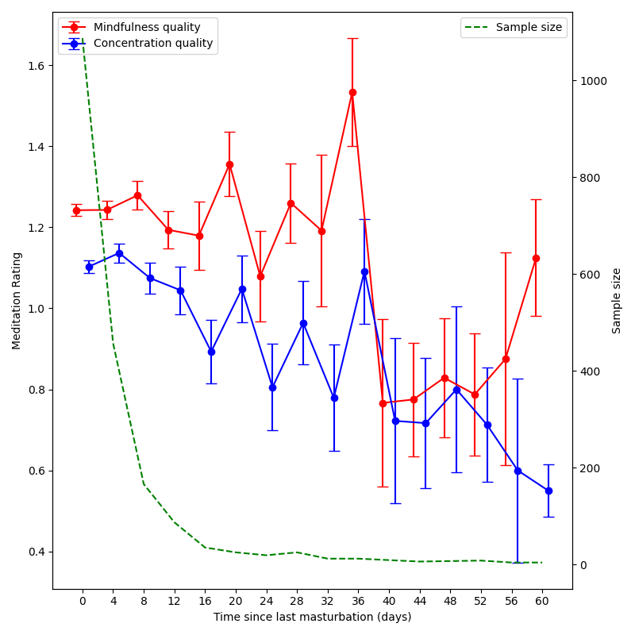

author: niplav, created: 2024-01-29, modified: 2025-02-08, language: english, status: finished, importance: 2, confidence: possible
In which I investigate whether not masturbating makes my meditations better. It doesn't, and instead plausibly makes them worse65%.
There is some received wisdom that ejaculation and masturbation in particular decreases meditation quality: The retreats of dhamma.org in the tradition of S.N. Goenka forbid any sexual activity, and Taoist sexual practices recommend semen retention. Since I track both my meditations and masturbations, I can check whether this is observationally true. Of course results from observational data can be due to confounders, but such results are more valuable than pure speculation, and may point to possible experimental investigations.
First, I load both meditation data and masturbation data (using my loading code from here):
>>> meditations=get_meditations()
>>> masturbations=get_masturbations()
Since I only started tracking my masturbations on 2021-01-15, I have to filter out all meditation I did before that:
tohu=masturbations['datetime'].min()
meditations=meditations.loc[meditations['meditation_start']>tohu]
And then I merge meditations and masturbations so that each meditation
is relation to the masturbation last before it:
meditations=meditations.sort_values('meditation_start')
masturbations=masturbations.sort_values('datetime')
combined=pd.merge_asof(meditations, masturbations, left_on='meditation_start', right_on='datetime', direction='backward')
['diff']=combined['meditation_start']-combined['datetime']
All hail merge_asof!
Just to check whether the difference computed is the right one, I do a quick sanity check:
>>> combined['diff'].describe()
count 1462
mean 3 days 21:46:44.564929548
std 6 days 10:27:57.403873207
min 0 days 00:03:45.389000
25% 0 days 16:00:47.628250
50% 1 days 12:27:33.874500
75% 3 days 14:14:14.750500
max 39 days 09:24:06.877000
Name: diff, dtype: object
And now I can simply compute the correlation with time since last masturbation and concentration & mindfulness during meditation:
>>> combined[['mindfulness_rating', 'concentration_rating', 'diff']].corr(numeric_only=False)
mindfulness_rating concentration_rating diff
mindfulness_rating 1.000000 0.637637 -0.076037
concentration_rating 0.637637 1.000000 -0.138188
diff -0.076037 -0.138188 1.000000
As one can see, the correlation between time since last masturbation and concentration/mindfulness are weak and contradictory, and I weakly conclude that masturbation does not influence meditation quality noticeably in practice regimes like mine. One might criticize my analysis for not including periods of long abstinence from ejaculation, which I guess is fair. So we can simply restrict the dataset to meditations 4 or more days after the last masturbation. We still have n=329, which is appreciable.
>>> combined_long=combined.loc[combined['diff']>pd.Timedelta('4d')]
>>> combined_long['diff'].describe()
count 553
mean 14 days 08:17:46.338198915
std 12 days 07:26:48.886237074
min 4 days 00:21:05.458000
25% 6 days 05:14:16.529000
50% 9 days 08:15:24.092000
75% 17 days 08:22:58
max 62 days 06:34:16
Name: diff, dtype: object
>>> combined_long[['mindfulness_rating', 'concentration_rating', 'diff']].corr(numeric_only=False)
mindfulness_rating concentration_rating diff
mindfulness_rating 1.000000 0.619317 -0.196030
concentration_rating 0.619317 1.000000 -0.241409
diff -0.196030 -0.241409 1.000000
The correlation of ≈-0.19 of abstinence-time with mindfulness and ≈-0.24 for concentration is still not strong enough to convince me, but perhaps points in some interesting direction.
Let's bucket the data into partitions of four days and plot the resulting data:
result = (combined[['rounded', 'mindfulness_rating', 'concentration_rating']]
.groupby('rounded')
.agg(['mean', 'size', 'std'])
.dropna())
result['mindfulness_rating', 'sem'] = (
result['mindfulness_rating']['std'] /
np.sqrt(result['mindfulness_rating']['size'])
)
result['concentration_rating', 'sem'] = (
result['concentration_rating']['std'] /
np.sqrt(result['concentration_rating']['size'])
)
Plot together with sample sizes:

Now this is fairly interesting! Even just eye-balling suggests that abstaining from masturbation might improve mindfulness up to 30 days, but has a negative effect on concentration. That could be worth testing, so I'd like someone to do an experiment on this (keeping a strict meditation schedule and randomizing 4-week pairs for masturbation/abstinence), since the sample sizes in the upper ranges are so small, especially above 40 days where they drop below 10 datapoints per bucket.
But I won't do it in the forseeable future, since other experiments have higher priority.